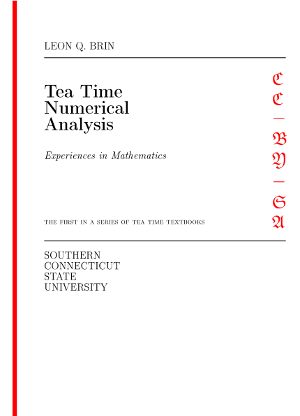

Table of Contents Ancillaries Octave Code Printed Copy Source More Info
Greetings! And thanks for visiting.
This textbook was born of a desire to contribute a viable, free, introductory Numerical Analysis textbook for instructors and students of mathematics. The ultimate goal of Tea Time Numerical Analysis is to be a complete, one-semester, single-pdf, downloadable textbook designed for mathematics classes.
- Over 250 pages
- Over 1000 lines of code
- Nearly 200 figures
- Open source